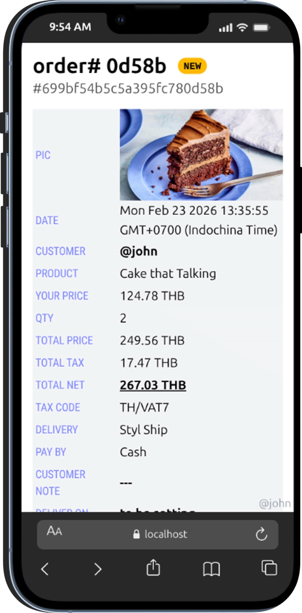

ตอนนี้ถ้าจะเรียกยุค ก็น่าจะเรียกกันว่า ยุค "โซเชียล" (social) คือเป็นยุคที่ข้อมูลข่าวสาร ไหลๆๆๆๆๆ สุดๆ ไหลทะลัก ท่วมท้น เลยแหละ ดังนั้น การใช้ชีวิต จะต้องใช้มือถือ (โทรศัพท์มือถือ ที่เรียกว่า smart phone คือเป็นจอสัมผัส แล้วกดทำอะไรต่างๆได้ เดี๋ยวนี้สั่งงานด้วยเสียงก็ได้ด้วย) ได้แทบทั้งหมด
โทรศัพท์มือถือ ขายดีเป็นเทน้ำเทท่า ระเบ้อระเบิด เถิดเทิง บริษัท Apple, Samsung และอะไรต่างๆ ของจีน เดี๋ยวนี้ผลิตมือถือ ขายมือถือ จ้าละหวั่น ไม่ทัน เรียกว่าเป็นสินค้ายอดฮิต ของโลก เลยตอนนี้
ทีนี้ จะจั่วหัวไว้ก่อน นิดเดียว ว่า ชีวิตคนเรา เดี๋ยวนี้ ต้องใช้มือถือ ทำอะไรหลายๆอย่าง ทุกวันนี้ และต่อไปอีกไม่นาน จะเรียกว่า "ทุกอย่าง" เลยก็ได้ ที่จะต้องทำผ่านมือถือ มันคือปัจจัยที่ 5 ของชีวิตคนยุคนี้ไปแล้ว โอเค เอาประมาณนี้ก่อน เดี๋ยวค่อยมาเล่าต่อว่าเรื่องราวของ Living in the next #styl มันจะเป็นยังไงต่อไป
-- 2026-02-25 @advisor1 postId=MTc3MTk4OTcyMDU5Nw / เผยแพร่ได้แต่ห้ามแก้ไขบิดเบือน